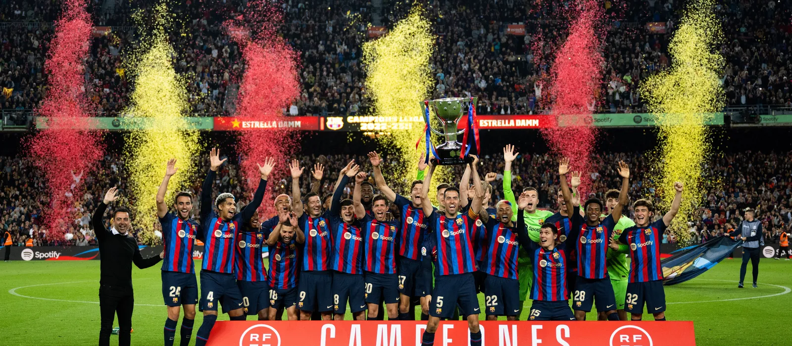

Le Palmarés du club
Une poignée de clubs dans le monde peuvent s'énorgueillir d'avoir remporté autant de titres.
La plus grande fierté du Club réside en ses 5 Coupes d'Europe soulevées à Wembley (1992, 2011),
Paris (2006), Rome (2009), Berlin (2015) et ses Mondiaux des Clubs FIFA (2009, 2011 et 2015)

 Ligue des Champions - 5 :
1991-92, 2005-06, 2008-09, 2010-11, 2014-15
Ligue des Champions - 5 :
1991-92, 2005-06, 2008-09, 2010-11, 2014-15
 Mondial des Clubs - 3
Mondial des Clubs - 3
 Supercoupe d'Europe - 5 :
1992-93, 1997-98, 2009-10, 2011-12, 2015-16
Supercoupe d'Europe - 5 :
1992-93, 1997-98, 2009-10, 2011-12, 2015-16
 Liga - 27 :
1928-29, 1944-45, 1947-48, 1948-49, 1951-52,
1952-53, 1958-59, 1959-60, 1973-74, 1984-85,
1990-91, 1991-92, 1992-93, 1993-94, 1997-98,
1998-99, 2004-05, 2005-06, 2008-09, 2009-10
, 2010-11, 2012-13, 2014-15, 2015-16, 2017-18, 2018-19, 2022-23
Liga - 27 :
1928-29, 1944-45, 1947-48, 1948-49, 1951-52,
1952-53, 1958-59, 1959-60, 1973-74, 1984-85,
1990-91, 1991-92, 1992-93, 1993-94, 1997-98,
1998-99, 2004-05, 2005-06, 2008-09, 2009-10
, 2010-11, 2012-13, 2014-15, 2015-16, 2017-18, 2018-19, 2022-23
 Coupe du Roi - 31 :
1909-10, 1911-12, 1912-13, 1919-20, 1921-22,
1924-25, 1925-26, 1927-28, 1941-42, 1950-51, 1951-52,
1952-53, 1956-57, 1958-59, 1962-63, 1967-68, 1970-71, 1977-78,
1980-81, 1982-83, 1987-88, 1989-90, 1996-97, 1997-98, 2008-09,
2011-12, 2014-15, 2015-16, 2016-17, 2017-18, 2020-21
Coupe du Roi - 31 :
1909-10, 1911-12, 1912-13, 1919-20, 1921-22,
1924-25, 1925-26, 1927-28, 1941-42, 1950-51, 1951-52,
1952-53, 1956-57, 1958-59, 1962-63, 1967-68, 1970-71, 1977-78,
1980-81, 1982-83, 1987-88, 1989-90, 1996-97, 1997-98, 2008-09,
2011-12, 2014-15, 2015-16, 2016-17, 2017-18, 2020-21
 Supercoupe d'Espagne - 14 :
1983-84, 1991-92, 1992-93, 1994-95, 1996-97, 2005-06,
2006-07, 2009-10, 2010-11, 2011-12, 2013-14, 2016-17,
2018-19, 2022-23
Supercoupe d'Espagne - 14 :
1983-84, 1991-92, 1992-93, 1994-95, 1996-97, 2005-06,
2006-07, 2009-10, 2010-11, 2011-12, 2013-14, 2016-17,
2018-19, 2022-23
Les années de gloire du Barçelone : Les triplés de
2011 & 2015